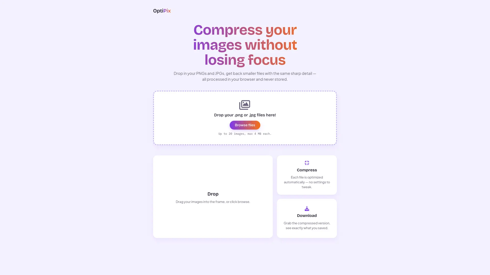
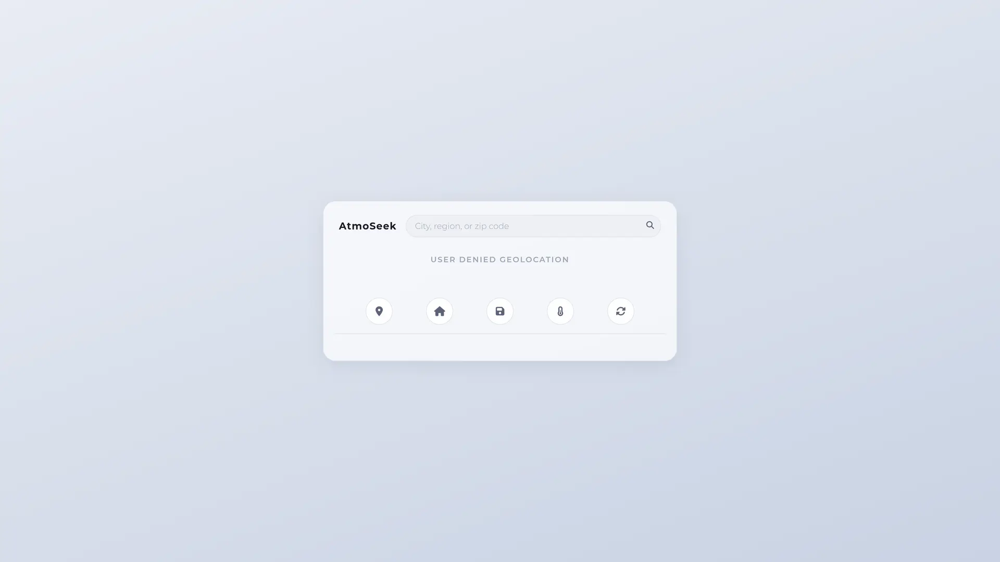
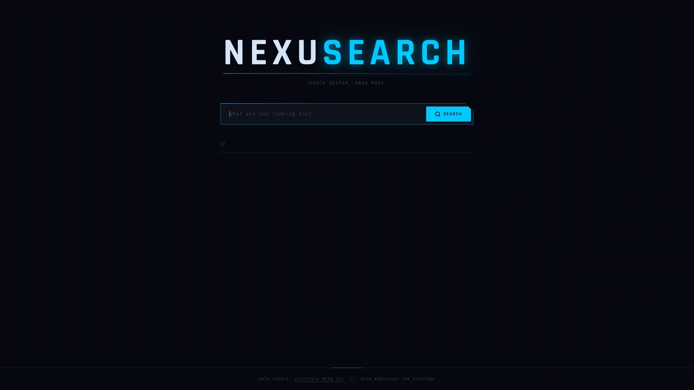
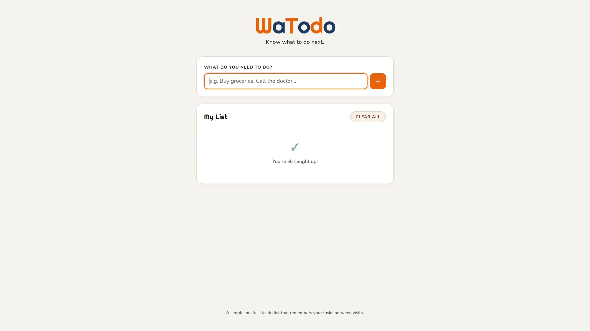
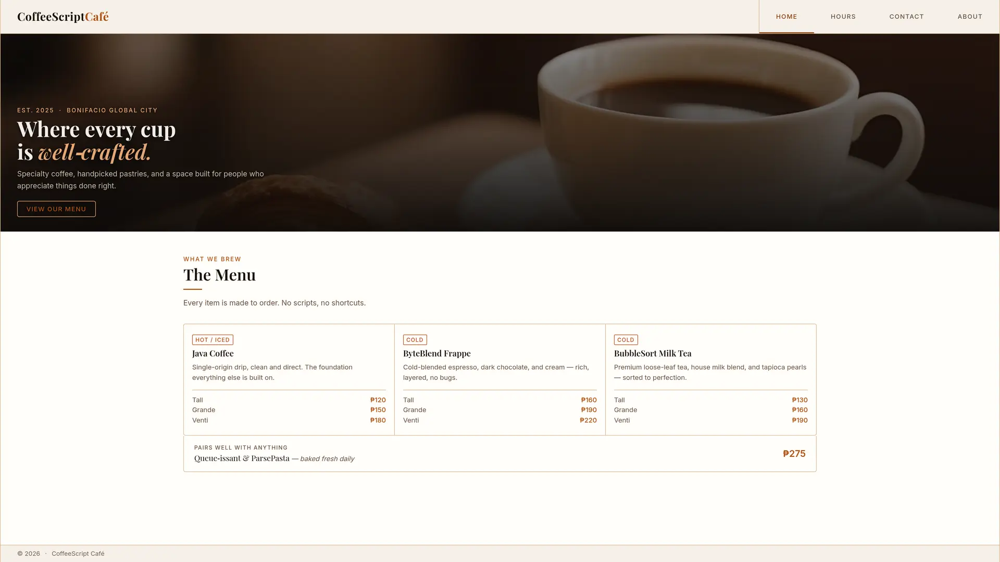
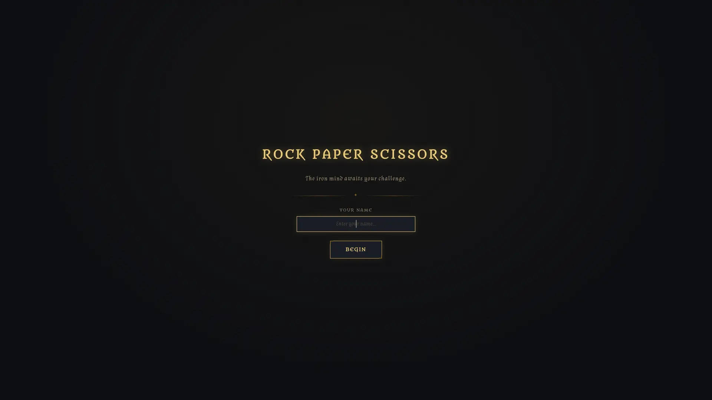

// STATE: READY_TO_BUILD
JJ Ginon
Frontend Web Developer
I create fast, accessible websites with clean code and thoughtful design — combining semantic HTML, modern CSS, and purposeful JavaScript to deliver interfaces that feel effortless to use.
$
// ABOUT
Built on fundamentals, not shortcuts
I'm a frontend developer focused on building fast, accessible, and thoughtful web experiences. I work primarily with HTML, CSS/SCSS, and JavaScript, keeping my stack intentional to better understand every layer behind the interfaces I create.
Accessibility and performance are central to my development process. I follow WCAG guidelines and validate my work using tools like Lighthouse, keyboard navigation, contrast checkers, and Firefox's Accessibility Inspector because a good interface should work well for everyone.
I'm continuing to grow my frontend capabilities by exploring serverless functions and modern deployment workflows, expanding my understanding of how frontend applications connect with backend services.
// SKILLS
Toolkit
- HTML5
- CSS3
- JavaScript (ES6+)
- SCSS
- Responsive Web Design
- Accessibility (WCAG)
- Git
- GitHub
- REST API Integration
- Performance Optimization
// WORK
Featured build

// FEATURED_PROJECT
OptiPix
A mobile-first image compression tool that reduces PNG and JPG file sizes while preserving visual quality. Built with HTML, SCSS, vanilla JavaScript, and a Netlify Function powered by Sharp, OptiPix reflects my focus on performance, accessibility, and clean, thoughtful user experiences.
- Vanilla JavaScript
- Netlify Functions
- Sharp
- Serverless Architecture
-

AtmoSeek
A modern weather application powered by Netlify serverless functions and real-time weather data. Built with semantic HTML, responsive SCSS, and modular JavaScript, it features ARIA-compliant autocomplete, dynamic weather themes, and an accessibility-first user experience.
- SCSS
- JavaScript
- Netlify Functions
- WeatherAPI
- ARIA Autocomplete
- Serverless Proxy
- Dynamic Themes
-

NexuSearch
An accessibility-first search application that transforms Wikipedia's open API into a sleek, responsive search experience. Built with semantic HTML, modular SCSS, and modern JavaScript, it features dynamic result rendering, keyboard-friendly interactions, and a distinctive cold-tech visual style.
- SCSS
- JavaScript
- Wikipedia API
- Dynamic Rendering
- Keyboard-Friendly
- Cold-Tech UI
-

WaTodo
A lightweight task management application designed for speed, simplicity, and accessibility. Built with semantic HTML, modular SCSS, and ES6 JavaScript, it features local storage persistence, responsive layouts, and an intuitive interface for organizing daily tasks.
- SCSS
- JavaScript (ES6+)
- Web Storage API
- LocalStorage Persistence
- Responsive Layout
-

CoffeeScript Café
A responsive multi-page café website showcasing modern frontend development, accessibility, and performance best practices. Originally inspired by Dave Gray's HTML and CSS tutorials, it has since been completely redesigned with original content, custom branding, and a polished, production-quality user experience.
- CSS3
- BEM
- JavaScript
- Multi-Page
- WCAG AA Contrast
- Scroll Animations
-

Rock Paper Scissors: PvE
An RPG-inspired reimagining of the classic Rock Paper Scissors game featuring immersive battle sequences, dynamic game logic, and persistent score tracking. Built with semantic HTML, modular SCSS, and ES6 JavaScript, it emphasizes accessibility, performance, and engaging user interactions.
- SCSS
- JavaScript (ES6+)
- Web Storage API
- Battle Sequences
- Persistent Scoreboard
No projects match this filter yet.
// _LOG
Development Experience
-
FOUNDATIONS
Rock Paper Scissors: PvE
Reimagined the classic game into a polished web experience, combining dynamic JavaScript gameplay, accessibility-first design, performance-focused styling, and a distinctive visual identity. It marked the beginning of my focus on building interactive, user-centered web applications with equal attention to design, accessibility, and performance.
-
ARCHITECTURE
WaTodo & NexuSearch redesigns
Built WaTodo and NexuSearch, then rebuilt both using modular SCSS architecture and BEM methodology to create a more consistent, scalable, and maintainable codebase.
-
REFINEMENT
CoffeeScript Café rebuild
Refactored a 2021-era tutorial project into a modern 2026 design on a dedicated redesign branch, with BEM CSS, scroll-driven animations, and accessibility improvements shaped through iterative testing.
-
SERVERLESS
AtmoSeek rebuild
Migrated the project to a new weather API, rewrote the SCSS and JavaScript from scratch, and implemented a Netlify Function to proxy requests while keeping the API key server-side. It was my first hands-on experience building with serverless functions.
-
CURRENT
OptiPix
Designed and built a complete image-compression tool with its own visual identity, powered by a Netlify Function running Sharp. The project brought together the accessibility, performance, architecture, and serverless practices I'd developed across previous projects.
// CONTACT
Let's build something
Open to frontend roles, freelance work, and conversations about accessible, well-crafted interfaces.